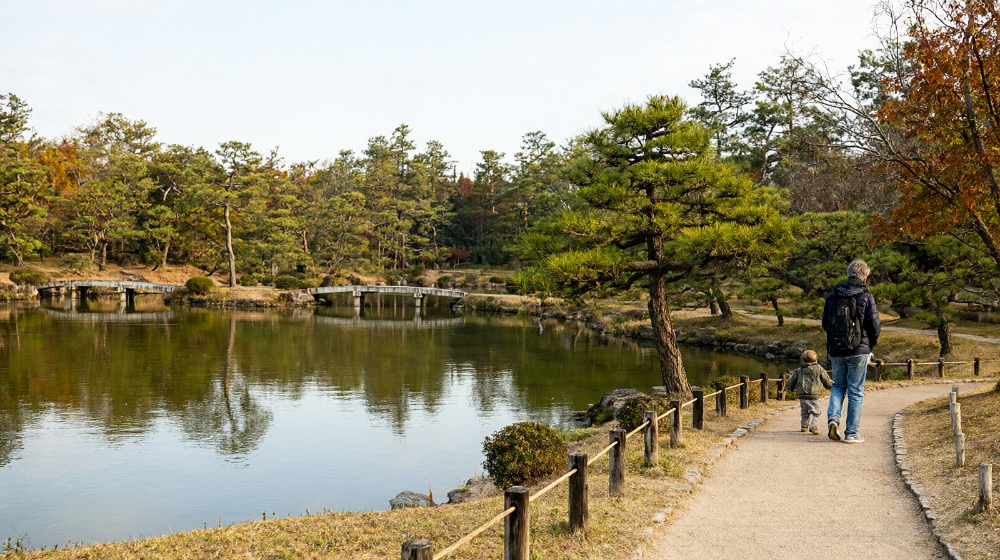

사누키 우동 본고장, 리쓰린 공원과 나오시마 예술의 섬의 관문. 인천 직항 약 1시간 40분
다카마쓰 여행 가이드
이 글은 블록 A~P 순서로 구성했습니다. 공식 출처로 확인한 값만 적었고, 확인하지 못한 값은 "확인 필요"로 남겼습니다. 확인일은 2026-10-22입니다. 환율은 100엔=853.02원(한국수출입은행 매매기준율, 2026-10-16 고시)이며, 원화 환산에는 모두 "약"을 붙였습니다. 가족(성인 2명, 초등학생 1명) 기준으로 읽어 주세요.
A. 히어로
- 도시명: 다카마쓰
- 한 줄 요약: 사누키 우동의 본고장이면서 리쓰린 공원과 나오시마 같은 세토나이카이 섬 여행의 관문입니다. 인천에서 직항으로 약 1시간 40분이며, 여름에는 페리나 차로 닿는 해변과 곶도 있습니다.
- 마지막 확인일: 2026-10-22
- 버튼: 2박 3일 일정 보기 | 총예산 예시 보기
B. 한눈에 보기
| 항목 | 내용 | 근거 |
|---|---|---|
| 추천 일수 | 2박 3일~3박 4일(나오시마 하루 포함). 4박 5일 이상이면 마쓰야마 연계 가능 | 편집부 판단 |
| 비행시간 | 인천에서 직항 약 1시간 40분~1시간 45분 | 카약, 나우보딩 공공 항공 데이터 |
| 1인 총예산 | 약 25만~40만원(항공 포함, 숙박·식비 제외) | K 블록 |
| 아이 적합도 | 높음. 리쓰린 공원은 유모차를 무료로 빌려주고, 시코쿠무라는 초등학생 이하 무료, 나오시마 미술관은 15세 이하 무료입니다 | 각 시설 공식 안내 |
C. 이 도시가 맞는 사람
| 구분 | 내용 |
|---|---|
| 맞는 유형 | 우동 가게를 돌아다니고, 걷기 좋은 정원을 보고, 페리로 섬에 가는 여행을 좋아하는 가족 |
| 맞는 유형 | 여름에 바다 일정(섬 해변이나 곶)을 한 번 넣고 싶은 가족 |
| 맞는 유형 | 마쓰야마와 묶어 시코쿠를 두 도시로 보려는 가족. 고속버스로 약 2시간 50분, 편도 4,400엔입니다 |
| 맞는 유형 | 귀국편이 오후(17:15 출발)라서 마지막 날 오전을 쓰고 싶은 여행 |
| 덜 맞는 유형 | 대형 테마파크나 쇼핑몰이 목적인 여행, 온천 숙박이 목적인 여행. 온천은 마쓰야마 도고온천이 맞습니다 |
| 덜 맞는 유형 | 출발 시각을 여러 편 중에서 고르고 싶은 여행. 인천 직항은 하루 2편이고 항공사는 2곳입니다 |
D. 점프 탭
E. 공항에서 시내까지
인천에서 오는 직항 (2026년 10월 1일~24일 국제선 시간표, 다카마쓰공항 공식)
| 항공사 | 인천 출발 → 다카마쓰 도착 | 다카마쓰 출발 → 인천 도착 | 운항 |
|---|---|---|---|
| 에어서울 (RS741, RS742) | 08:45 → 10:30 | 11:40 → 13:20 | 매일 |
| 진에어 (LJ359, LJ360) | 14:30 → 16:15 | 17:15 → 18:55 | 매일 |
- 대한항공은 직접 운항하지 않고, 진에어 운항편에 대한항공 편명을 붙여 파는 공동운항(코드셰어)입니다. 인천 14:30 출발 LJ359는 KE5099, 다카마쓰 17:15 출발 LJ360은 KE5100입니다. 2026년 10월 14일 공지이며 대상 기간은 10월 6일~24일입니다. 대한항공 편명 항공권은 대한항공 홈페이지에서만 예약됩니다 (다카마쓰공항 공식).
- 부산~다카마쓰는 에어부산이 화·금·일에 운항합니다. 부산 17:20 출발(BX1325) 18:40 도착, 다카마쓰 19:35 출발(BX1315) 20:55 도착입니다 (다카마쓰공항 국제선 시간표).
- 위 표는 하계(10월 24일까지) 시간표입니다. 10월 25일부터의 동계 시간표는 공식 확인이 필요합니다.
- 항공권 최저가 표시값은 K 블록에 정리했습니다.
공항에서 시내까지 (코토덴버스 공항 리무진)
| 목적지 | 소요시간 | 어른 편도 요금 | 비고 |
|---|---|---|---|
| 리쓰린공원 앞 | 약 23분 | 1,000엔(약 8,500원) | 공원 동문까지 도보 약 1분 |
| 가와라마치(5번 승강장) | 약 30분 | 1,000엔(약 8,500원) | 코토덴 환승 거점, 시내 중심 |
| JR 다카마쓰역·페리터미널 | 약 45분 | 1,300엔(약 11,100원) | 나오시마 페리 승강장과 가까움 |
(출처: 다카마쓰공항 공식 공항버스 안내, 코토덴버스 운임표. 요금은 2026년 10월 1일 개정분입니다.)
- 어린이 요금은 어른의 절반(500엔, 650엔)입니다. 전 좌석 자유석이며 항공기 도착 시각에 맞춰 운행합니다. 국내선은 도착 약 15분 뒤, 국제선은 약 45분 뒤 출발 예정입니다 (코토덴 공식). 시간표는 매월 바뀌므로 출발 전에 코토덴 공식 시간표를 보세요. 공항 출발 막차는 확인 필요입니다.
- 전국 교통 IC카드(이루카, 스이카, ICOCA 등)로 결제할 수 있습니다 (코토덴 공식).
- 택시는 심야나 이른 아침 도착 때 공항 공식 안내에서 예약 방법을 안내합니다. 요금은 확인 필요입니다.
F. 숙소 권역
| 권역 | 장점 | 단점 | 1박 가격대 | 잘 맞는 동행 |
|---|---|---|---|---|
| JR 다카마쓰역·선포트 | 공항 리무진이 서는 곳이며 나오시마 페리터미널이 도보권. 오카야마행 마린라이너와 마쓰야마행 고속버스 승차점 | 번화가인 가와라마치와 조금 떨어짐 | 확인 필요 | 나오시마나 오카야마로 자주 이동하는 가족 |
| 가와라마치·효고마치 | 시내 중심 상점가(아케이드)와 우동 가게, 코토덴 환승 거점 | 상점가라 밤 소음은 숙소마다 확인 | 확인 필요 | 우동과 시내 구경 중심 여행 |
| 리쓰린공원 인근 | 정원 관람에 편하고, 개원이 계절에 따라 5:30~7:00으로 이름 | 시내와 항구에서 거리가 있음 | 확인 필요 | 정원과 산책 위주 가족 |
- 다카마쓰에는 도요코인 같은 비즈니스 호텔이 많다는 안내가 있습니다(비공식). 1박 가격은 날짜별 변동이 커서, 같은 날짜와 같은 인원 조건으로 비교하세요.
G. 추천 일정
다카마쓰 전용 일정 글은 아직 없어 구성안으로 대신합니다. 하루 방문지는 2~3곳으로 잡았습니다.
| 일수 | 구성 |
|---|---|
| 2박 3일 | 1일차 도착(10:30 또는 16:15) 후 리쓰린 공원과 우동 저녁. 2일차 나오시마 당일치기(페리, 미술관 사전 예약). 3일차 시코쿠무라와 야시마 또는 시내 산책 후 귀국 |
| 3박 4일 (기본) | 1일차 리쓰린 공원과 다마모공원(다카마쓰성 터), 우동. 2일차 나오시마 종일. 3일차 시코쿠무라와 야시마, 우동 순례. 4일차 귀국. 7~8월이라면 3일차를 섬 해변(메기지마)으로 바꿀 수 있습니다 |
| 4박 5일 이상 | 3박 4일 일정 뒤에 마쓰야마를 이어 붙임. 다카마쓰~마쓰야마 고속버스는 약 2시간 50분, 편도 4,400엔(왕복 8,400엔, 소인 반액 2,200엔)입니다 (사쿠고 고속버스 공식, 2026-10-01 개정). 마쓰야마에서는 도고온천 숙박을 권합니다 |
- 귀국편이 오전(11:40 출발)이면 마지막 날은 이동만 하고, 오후(17:15 출발)면 오전에 시코쿠무라나 우동 한 끼를 넣을 수 있습니다.
- 나오시마의 미술관은 대부분 월요일이 휴관이므로 화~일요일에 배치하세요 (베네세 아트 사이트 공식).
H. 아이 동반 코스 (선택)
| 시설 | 확인된 내용 | 예약 | 유모차·수유실·휴식 |
|---|---|---|---|
| 리쓰린 공원 | 어른 500엔(약 4,300원), 초·중학생 170엔(약 1,500원), 미취학 무료. 연중무휴이고 1월 1일과 3월 16일은 무료 개원. 개원 시간은 계절별로 달라 1월과 12월은 7:00~17:00, 6~8월은 5:30~19:00 등. 와센 보트 어른 620엔, 어린이 310엔(9:00~16:30) | 공식 안내에 개인 예약 제도 없음 | 유모차와 휠체어 무료 대여, 동문·북문 보관함, 다목적 화장실 (가가와현 관광 공식) |
| 시코쿠무라 | 어른 2,200엔(약 18,800원), 고·중학생 600엔, 초등학생 이하 무료. 9:30~17:00(입촌 16:30까지). 화요일 휴관(공휴일이면 다음 날) | 개인 예약 제도 없음. 15명 이상 단체만 사전 신청 | 야외 산책형 박물관(시코쿠 전통 건축). 유모차와 휴식 정보는 확인 필요 (시코쿠무라 공식) |
| 나오시마 미술관 (지중미술관, 베네세하우스 뮤지엄) | 지중미술관 10:00~17:00(최종 입관 16:00), 온라인 평일 2,500엔, 주말 2,700엔(약 2만 1천~2만 3천원), 15세 이하 무료. 베네세하우스 뮤지엄 8:00~21:00(최종 입관 20:00), 온라인 1,300엔(약 11,100원), 15세 이하 무료 | 2024년 10월 1일부터 온라인 사전 예약 필수. 온라인이 매진되면 당일 창구 판매 없음 | 페리 약 50분과 섬 안 버스(정원 28명) 이동이 있음. 베네세하우스 뮤지엄, 발리갤러리, 스기모토 갤러리를 제외한 시설은 원칙적으로 월요일 휴관 |
- 나오시마는 미술관에 들어가지 않아도 항구의 빨간 호박(구사마 야요이 작품) 같은 야외 작품과 바다 산책만으로 아이가 즐길 수 있습니다.
- 우동 가게는 대개 셀프 방식(그릇을 들고 면과 반찬을 직접 고름)이라 아이도 참여하기 쉽습니다 (일반 안내, 비공식).
I. 맛집 시간대 (선택)
사누키 우동이 대표 메뉴입니다. 한 그릇 가격과 예약 여부는 가게마다 달라 "확인 필요"로 둡니다.
| 시간대 | 방향 | 가격대 | 예약 |
|---|---|---|---|
| 아침 | 호텔 조식, 또는 아침부터 여는 우동 가게 | 확인 필요 | 확인 필요 |
| 점심 | 가와라마치·효고마치 상점가의 우동, 시코쿠무라 안 우동 가게 | 확인 필요 | 확인 필요 |
| 저녁 | 시내 상점가, 세토나이카이 해산물 | 확인 필요 | 확인 필요 |
| 야식 | 아이와 함께라면 편의점 간식 정도 | 해당 없음 | 해당 없음 |
- 오후에 문을 닫는 우동 가게가 많다는 안내가 있습니다(비공식). 점심을 가장 든든하게 잡으세요.
J. 근교 당일치기 (선택)
| 목적지 | 이동 시간·요금 (다카마쓰 기준) | 당일 가능 | 메모 |
|---|---|---|---|
| 나오시마 | 다카마쓰항에서 페리 약 50분, 어른 680엔(약 5,800원), 초등학생 340엔. 고속선 약 30분, 어른 1,590엔(약 13,600원) | 가능(이른 출발) | 미술관은 온라인 예약 필수. 다카마쓰 출발 페리 08:12, 10:14, 12:40, 15:35, 18:05, 미야노우라 출발 페리 07:00, 09:07, 11:30, 14:20, 17:00 (시코쿠 기선 공식). 당일치기라면 17:00 페리, 늦어도 19:45 고속선을 타세요 |
| 오카야마 | JR 마린라이너(세토대교 경유)로 약 55분~1시간, 약 1,990엔(비공식) | 가능 | 오카야마에서 신칸센으로 갈아탈 수 있고, 우노항에서 나오시마까지 페리 370엔, 약 20분으로 이어갈 수도 있음 |
| 마쓰야마 | 고속버스 약 2시간 50분, 편도 4,400엔(약 37,500원), 소인 2,200엔 (사쿠고 고속버스 공식, 2026-10-01 개정) | 당일치기보다 연계 여행 | G 블록의 4박 5일 구성 참고 |
여름(7~8월) 해변·곶
다카마쓰 주변(가가와현)의 바다 명소 3곳입니다. 해수욕장은 7~8월 개장이 기본이므로 이 시기에 맞춰 계획하세요.
| 명소 | 가는 법 | 특징 |
|---|---|---|
| 다케이간논미사키 | 다카마쓰시 아지초. 차량으로 다카마쓰 중앙IC에서 약 35분 (가가와현 관광협회 공식) | 시코쿠 본섬 최북단의 곶. 다케이간논사 경내에 있고 절벽과 바다 전망이 좋음. 참배객 전용 주차장을 씀 |
| 메기지마 유미가하마 | 다카마쓰항에서 페리 약 20분, 편도 370엔 (여웅도해운 공식) | 메기지마의 백사장 해수욕장. 같은 섬의 오니가시마 동굴과 하루에 묶기 좋음 |
| 오기지마 해수욕장 | 다카마쓰항에서 페리 약 40분, 편도 510엔 (여웅도해운 공식) | 오기지마 북쪽의 조용한 섬 해변. 오이해수욕장이라는 이름으로도 소개됨(익스피리언스 다카마쓰 추천 목록, 비공식) |
여웅도해운 페리 요금(공식)은 다음과 같습니다.
| 구간 | 소요시간 | 어른 편도/왕복 | 초등학생 편도/왕복 |
|---|---|---|---|
| 다카마쓰항~메기지마 | 약 20분 | 370엔 / 680엔 | 190엔 / 360엔 |
| 다카마쓰항~오기지마 | 약 40분 | 510엔 / 920엔 | 260엔 / 480엔 |
| 메기지마~오기지마 | 약 15분 | 240엔 / 440엔 | 120엔 / 220엔 |
- 미취학 아동은 어른 1명당 1명까지 무료이고, 두 번째부터 초등학생 요금입니다.
- 다카마쓰 출발 기본 배차는 8:00, 10:00, 12:00, 14:00, 16:00, 18:10입니다. 8월 1일~20일은 증편 시간표가 따로 있으니 출발 전에 공식 배차표를 확인하세요.
- 오기지마에 먼저 갔다가 돌아오는 길에 메기지마를 들르려면 구간별 승선권(다카마쓰~오기지마, 오기지마~메기지마, 메기지마~다카마쓰)을 따로 사야 합니다 (여웅도해운 공식).
- 섬에 들어가지 않고 본토에서 바다를 보려면 다케이간논미사키와 가까운 아지 해변, 야시마 곶을 묶는 차량 코스가 효율적입니다. 이 코스는 차가 있어야 합니다.
K. 총예산 예시
성인 1인, 2박 3일, 인천 출발, 나오시마 하루 포함 기준입니다. 환율은 100엔=853.02원(한국수출입은행 매매기준율, 2026-10-16 고시)입니다.
| 항목 | 금액(약) | 근거 |
|---|---|---|
| 항공 | 약 20만~26만원 | 인천 왕복 최저 225,222원(카약, 진에어, 2026-10-08 갱신), 12개월 평균 263,014원(카약). 트립닷컴은 왕복 201,400원부터(비공식 가격 비교). 날짜와 항공사에 따라 변동 큼 |
| 숙박 (2박) | 확인 필요 | 시내 비즈니스 호텔을 날짜별로 비교해야 합니다 |
| 식비 | 확인 필요 | 확인된 출처 없음 |
| 교통 | 약 33,800원 | 공항 리무진 왕복 2,600엔(약 22,200원)과 나오시마 페리 왕복 1,360엔(약 11,600원). 시내 코토덴 요금은 확인 필요 |
| 입장료 | 약 44,400원 | 리쓰린공원 500엔(약 4,300원), 시코쿠무라 2,200엔(약 18,800원), 지중미술관 온라인 2,500엔(약 21,300원). 나오시마는 예약 필요 |
| 합계 (숙박·식비 제외) | 약 28만~34만원 | 하한~상한 추정. 앞머리의 25만~40만원은 여유를 둔 표기이며 권역 페이지와 같은 값입니다 |
- 지중미술관 대신 베네세하우스 뮤지엄(1,300엔)만 보면 입장료가 줄어듭니다.
- 해변 일정을 넣으면 메기지마 왕복 어른 680엔(약 5,800원), 오기지마 왕복 920엔(약 7,800원)이 더해집니다.
예산 계산기로 계산 (예정)
L. 현지 팁·주의
_3~5줄_
- 나오시마의 거의 모든 미술관은 2024년 10월 1일부터 온라인 사전 예약제입니다. 지중미술관과 스기모토 갤러리 등은 날짜와 시간을 정해야 하고, 온라인이 매진되면 당일 창구 판매가 없으므로 일정을 정하는 즉시 예약하세요 (베네세 아트 사이트 공식).
- 나오시마 당일치기의 다카마쓰행 막배는 페리 17:00, 그 뒤 19:45 고속선입니다 (시코쿠 기선 공식). 페리 매표는 출항 40분 전부터, 고속선은 30분 전부터이고 현금만 받습니다.
- 리쓰린 공원은 연중무휴이며 유모차와 휠체어를 무료로 빌려줍니다. 공식 명칭은 특별명승 리쓰린공원입니다. 미쓰비시 가든이라는 별칭은 가가와현이나 다카마쓰시 공식 자료에서 확인되지 않았습니다(확인 필요).
- 다카마쓰공항 리무진 시간표는 항공편에 맞춰 매월 바뀝니다. 출발 전에 코토덴 공식 시간표로 확인하세요.
- 섬 해변은 페리 막배 시각을 먼저 확인하고 일정을 짜세요. 다케이간논미사키는 대중교통이 불편하므로 차량 이동을 전제로 합니다.
M. 귀국 동선
| 귀국편 | 공항 도착 권장 | 시내에서 출발 예시 |
|---|---|---|
| 11:40 출발 (에어서울 RS742) | 출발 2시간 전인 9:40쯤 | JR역에서 리무진 약 45분. 국제선 보안검색은 출발 1시간 30분 전부터 30분 전 사이에 받으세요 (다카마쓰공항 공식) |
| 17:15 출발 (진에어 LJ360) | 출발 2시간 전인 15:15쯤 | 체크아웃 후 짐을 맡기고 오전 관광 가능 |
- 국제선 수속은 1층 체크인 카운터, 보안검색은 2층입니다. 공항 안에 면세점이 있습니다 (다카마쓰공항 공식).
- 면세는 2026년 11월 1일 구매분부터 세금이 포함된 가격으로 사고, 출국 때 세관 확인을 받은 뒤 환급받습니다. 1개 점포에서 하루 5,000엔 이상(세금 별도)이 대상입니다 (일본 세관). 10월 31일까지의 구매분은 기존 방식입니다. 다카마쓰공항에 신형 환급 단말기가 있는지는 확인 필요입니다.
N. FAQ
_5~7개_
- 인천에서 다카마쓰까지 직항이 있나요? 네. 에어서울(08:45 출발)과 진에어(14:30 출발)가 매일 2편 운항합니다 (다카마쓰공항 국제선 시간표). 비행시간은 약 1시간 40분~1시간 45분입니다.
- 대한항공으로도 갈 수 있나요? 대한항공이 직접 운항하지는 않고, 진에어 운항편에 KE5099, KE5100 편명이 붙은 공동운항 판매입니다. 대한항공 홈페이지에서 예약합니다 (다카마쓰공항 공식).
- 공항에서 시내까지 어떻게 가나요? 공항 리무진으로 JR 다카마쓰역까지 약 45분, 1,300엔이고, 리쓰린공원 앞까지는 약 23분, 1,000엔입니다.
- 나오시마는 어떻게 가나요? 다카마쓰항에서 페리로 약 50분, 어른 680엔입니다. 미술관은 온라인 사전 예약이 필수입니다 (시코쿠 기선, 베네세 아트 사이트 공식).
- 여름에 갈 만한 바다가 있나요? 페리로 메기지마 유미가하마(약 20분, 편도 370엔)와 오기지마 해수욕장(약 40분, 편도 510엔)에 갈 수 있고, 차량으로는 다카마쓰 중앙IC에서 약 35분 거리의 다케이간논미사키가 있습니다 (여웅도해운, 가가와현 관광협회 공식).
- 아이와 가기 좋은가요? 리쓰린 공원은 유모차를 무료로 빌려주고 시코쿠무라는 초등학생 이하 무료입니다. 나오시마 미술관도 15세 이하 무료이지만 페리와 버스 이동이 있습니다.
- 마쓰야마와 함께 가려면요? 고속버스로 약 2시간 50분, 편도 4,400엔입니다. 4박 5일 이상 여유가 있을 때 이어 붙이세요 (사쿠고 고속버스 공식, 2026-10-01 개정).
O. 관련 글
- 주부·시코쿠·기타 권역 가이드 (같은 권역)
- 마쓰야마 여행 가이드 (같은 권역 도시, 연계 루트)
- 나고야 여행 가이드 (같은 권역 도시)
- 마쓰야마 3박 4일 느린 가족 일정 (마쓰야마 연계 시 참고)
- 2026년 11월 일본 면세 환급 절차 (M 블록 연결)
- 항공권 총액 비교
- 출국 전 체크리스트
P. 다른 도시 비교 (선택)
_다른 도시 카드_
아래 값은 각 도시 허브 앞머리에서 가져왔습니다. 예산은 도시마다 산정 기준(숙박·식비 포함 여부, 일정 길이)이 달라 단순 비교가 어렵습니다. 기준은 각 허브의 K 블록을 확인하세요.
| 도시 | 허브 | 비행시간 | 1인 총예산 | 추천 일수 |
|---|---|---|---|---|
| 마쓰야마 | 허브 보기 | 인천 직항 약 1시간 35분 | 약 47만원 이상(식비 제외 하한) | 3박 4일 |
| 나고야 | 허브 보기 | 인천 직항 약 1시간 50분~2시간 | 약 25만~55만원(숙박·식비 제외) | 2박 3일~3박 4일 |
| 오사카 | 허브 보기 | 인천 직항 약 1시간 40분~2시간 | 약 32만~62만원(숙박·식비 제외) | 3박 4일 |
| 도쿄 | 허브 보기 | 인천·김포 약 2시간 5분~2시간 40분 | 약 60만~115만원 | 3박 4일 |
확인 필요로 남긴 항목
- 다카마쓰공항 동계(10월 25일~) 직항 시간표(본문은 2026년 10월 1일~24일 기준)
- 공항 리무진 막차 시각과 월별 시간표
- 숙소 1박 가격대, 우동 가게와 식당 가격, 예약 규정
- 공항~시내 택시 요금
- 오카야마~다카마쓰 JR 마린라이너 정확한 요금(1,990엔은 비공식)
- 다카마쓰공항 신형 면세 환급 단말기 유무
- 미쓰비시 가든 별칭(공식 출처에서 확인되지 않음)
- 오기지마 해수욕장의 오이해수욕장 표기와 개장 기간(비공식 목록 기준)
공식 출처
- 다카마쓰공항 국제선 시간표: https://www.takamatsu-airport.com/timetable/int.php
- 다카마쓰공항 대한항공 공동운항 공지: https://www.takamatsu-airport.com/news/info/20261014-10141/
- 다카마쓰공항 공항버스 안내: https://www.takamatsu-airport.com/access/bus/index.php
- 다카마쓰공항 국제선 수속 안내: https://www.takamatsu-airport.com/embarkation/int.php
- 코토덴 리무진 시간표·운임: https://www.kotoden.co.jp/publichtm/bus/limousine/index.html
- 시코쿠 기선 다카마쓰~나오시마: https://shikokukisen.com/takamatsu-miyanoura/
- 나오시마 관광협회: http://naoshima.net/ko/access
- 베네세 아트 사이트 나오시마 예약: https://benesse-artsite.jp/general-information.html
- 리쓰린 공원(가가와현 관광): https://www.my-kagawa.jp/ko/ritsurin/
- 시코쿠무라: https://www.shikokumura.or.jp/information/
- 사쿠고 고속버스 마쓰야마 노선: https://www.yonkou-bus.co.jp/line/matsuyama.html
- 항공권 가격 비교(카약, 트립닷컴): https://kr.trip.com/flights/airport-icn-tak/
- 일본 세관 면세 환급: https://www.customs.go.jp/kaigairyoko/taxrefund_e.html